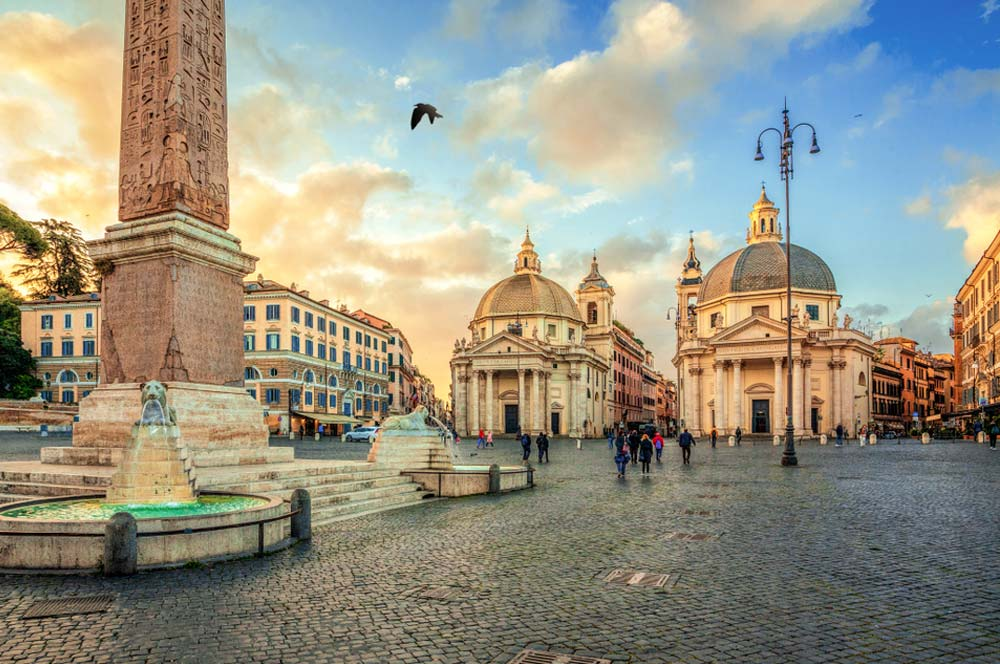

Lasagne

Ingredients
Meat Sauce:
- Lean Ground Beef: 1 and a half pounds
- Italian Sausage: 1 pound
- Fresh Mushrooms, Chopped: 1 pack or roughly 8 ounces
- Salt: 1 teaspoon
- Black Pepper: Half a teaspoon, freshly ground
- Italian Seasoning: Half a teaspoon
- Red Pepper Flakes: Quarter of a teaspoon
- Marinara Sauce: 6 cups
- Cup of Water: Quarter of a cup or as required
- Pasta: 1 pack, around 16 ounces
Ricotta Filling:
- Eggs: 2, large
- Ricotta Cheese: 2 pounds
- Mozzarella Cheese: 8 ounces, diced
- Parmigiano-Reggiano: 2 thirds of a cup, freshly grated
- Fresh Parsley: Quarter of a Cup, fresh and chopped
- Salt: 1 teaspoon
- Black Pepper: Quarter of a teaspoon, freshly ground
- Cayenne Pepper: 1 pinch, or to taste
Cheese Topping
- Fresh Mozzarella:4 ounces, diced
- Parmigiano-Reggiano: Half a cup, freshly shredded
Why I Love This Recipe

Italy. One of the most beautiful countries in the world, with some of the most delicious home made recipes to boot. I haven't spent nearly enough time there having visited only
twice, but one thing I know for sure is that no matter how many restuarants you frequent around the world, you can't beat freshly made italian cuisine. Sitting in the Piazza
del Popolo pictured above, soaking in the afternoon sun, it suddenly made sense why the Italian people seem so care free. After trekking the bustling city streets of Rome, nothing says
relaxation like sitting down with an ice cold drink with a particularly cheesy lasagne, or really any pasta dish. Why I love lasagne so much in particular though is the perfect
marriage of meat, cheese and pasta in whatever ratio you deem correct. See, a lasagne is the epitome of easy to make, almost impossible to master and yet, that mastery is what
the Italian people have been chasing for centuries. Boy let me tell you, the results of that hard work speak for themselves, I urge you if you're not sure where to go on your yearly holiday,
the answer is Rome. Just make sure to make the most of the time and try everything they have to offer because what a place for food.
Instructions
- First, we need to make the sauce! Add your beef, sausage and other meats you may have chosen to the pot and cook over a medium heat until fully browned and excess water content
is cooked out. Then add your seasonings: salt, black pepper, italian seasoning and pepper flakes. Once you've done this stir in your mushrooms and increase to heat to medium-high
until the mushrooms have released the juices, and the mixture is dry once again.
- Once your meat is sufficiently cooked, it's time to add your marinara sauce, if you're using a jarred sauce, make sure to add just a little water to get all of the sauce out
of the jar. Now we want to reduce the heat to low and leave it to simmer. I tend to leave this for around 2 hours, just until the meat is incredibly tender. Make sure to keep
checking it and if the sauce is becoming too thick, just add a little water. Once it's done, skim the fat and then season again with some salt and black pepper before removing
from the heat.
- Now that the sauce is almost finished, we can begin making the pasta. Bring a large pot of water to the boil and salt it until it's similar to sea water.
Cook your lasagne in the boiling water and stir occasionally. If you're using packet pasta make sure to cook it for slightly less time than it says on the packet as you'll
be finising it in the sauce. Make sure also to save some of the pasta water so that it can be added to the sauce.
- While the pasta is boiling, we can work on makiing the filling. Whisk eggs in a large bowl and then stir in all your other ingredients. Rictotta,
mozzarella, Parmigiano-Reggiano, parsley, salt. black pepper and cayenne pepper.
- Now that your sauce, filling and pasta are finished, preheat your oven to 375 degrees F or 190 degrees C.
- Divide the sauce into quarters, the pasta into thirds and the filling in half. These will be used to make the layers.
- Layer the ingredients in a 10x15-inch baking pan, spreading out to fill the entirety of the pan. Repeat as follows: one part sauce, one part pasta,
one part filling. Repeat this making sure to tap the pan lightly after adding the sauce just to make sure that it settles. Sprinkle the remaining cheese over the top!
- Cover the dish with foil, making sure that it doesn't touch the cheese on top. Place onto a trat and pop it into the over for about 30 minutes.
Once this is done, remove the foil and aloow to bake until golden brown, about another 30 minutes.
- Make sure to let it sit for 20 minutes before serving as it'll be burning hot! Then, enjoy!
In Closing
I hope that you enjoy this recipe as much as I do, make sure to invite all your friends and family round for a drink and replicate that authentic Italian feeling! Thanks
for following this recipe and if you like it, check out some of my others below!